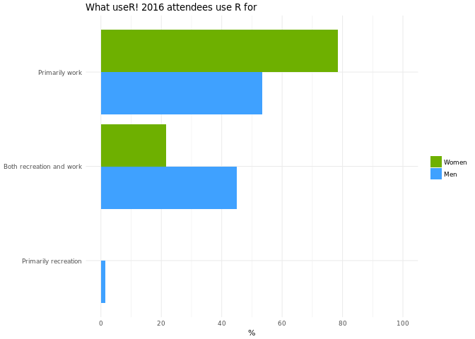
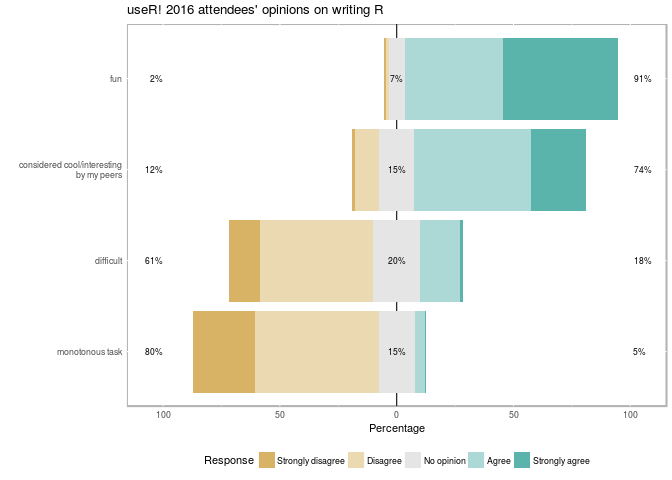

In our first post on the useR! 2016 survey we discussed the responses from the demographic section, finding in particular that:
- The useR! 2016 attendees were predominately men, typically under 40, White/Caucasian and employed full-time.
- Women attendees tended to be younger and less advanced in their careers.
- Non-Asian minority races and LGBT individuals were under-represented.
- Approximately a quarter of attendees were caregivers.
We now turn to look at useRs relationship with R: what experience do they have in using R and what do they think of R?
Summary
useR! attendees have generally been using R for many years and often have prior programming experience. Women tend to have less experience and a lower involvement in package development, though this can be attributed to a lower age distribution.
Women are less likely to use R for recreation, but are just as likely as men to consider writing R fun. useR! attendees have a generally positive view of R and would recommend it to friends and colleagues for statistical analysis.
We recommend teaching R to newcomers in a way that focuses on data science and does not assume a programming background. Mentors and managers should recognize that people from under-represented groups may need additional support to fill in gaps in their programming knowledge. To encourage people from under-represented groups to develop as R programmers and contribute to the community, we recommend promoting opportunities and activities that are paid and/or help to advance their careers.
Survey results
Programming experience
We first asked attendees how long they had been using R for. Unsurprisingly for attendees of a conference all about R, the respondents tend to be rather experienced, with more than half (57%, 251 of 442) using R for at least 5 years. Nonetheless, the conference does attract people new to R, with a small number having less than 6 months experience. A greater proportion of women than men have fewer than two years experience (24%, 39 of 164 vs 12%, 34 of 276) which correlates with the younger age distribution we noted in our first post. The following plot shows the percentages within each experience category for each gender:

66% of women (109 of 165) said they had programming experience before learning to use R, compared with 82% of men (227 of 276). Since women tend to be younger, this could be due to increasing use of R in teaching, particularly on undergraduate courses. Thus younger people generally are less likely to have used other languages for data analysis such as SAS, Stata, S-plus, Genstat, etc. However it could indicate a different background of women vs. men, in particular they may be less likely to have any formal training in computer science, where they might have been taught C/C++, Java etc before learning R.
We also asked about how people use the language. Respondents were asked to confirm that any or all of the following statements applied to them:
- “I use functions from existing R packages to analyze data”
- “I write R code designed to make my work easier, such as loops or conditionals or functions”
- “I write R functions for use by myself or my collaborators”
- “I contribute to R packages (on CRAN or elsewhere)”
- “I have written my own R package”
- “I have written my own R package and released it on CRAN or Bioconductor (or shared it on GitHub, R-Forge or similar platforms)”
As might be expected given the length of time useR! attendees have been using R, their use is generally quite advanced with the vast majority using techniques to control the flow of their code (86%, 392 of 458) or writing custom R functions (85%, 389 of 458). More than half have written their own package(s) (52%, 238 of 458) and a third have publicly released a package (34%, 155 of 458).
Reflecting the distribution of length of R programming experience, the proportion of women using advanced programming techniques is slightly lower than men and when it comes to package development the proportion is lower still:

The final question we asked regarding use of R was whether the attendees use R primarily for work, recreation or both. The results were significantly different for men and women, only 22% of women (35 of 162) use R for both work and recreation compared to 45% of men (147 of 275); the few people that use R for recreation only were all men. Although factors such as age and programming experience may come into play here, it is likely that social expectations of women are also a factor. For example, although responsibility for cooking, childcare and housework is shared more evenly among working couples, in different sex couples women often shoulder a greater responsibility1. With reduced leisure time, women may be less willing to use R just for fun, or may feel less able to do so, due to expectations of their family and friends about how they should spend their free time.

Overall, this paints a picture of useR! attendees as a population of mostly long-term R programmers often writing code for more than their individual use - which makes sense. As we discussed in our first post, conferences are expensive in terms of both time and money, so a conference on R is most viable for people that use R substantially in their work and hence can justify the cost to their employers. As the main conference organised by the R Foundation, useR! is particularly attractive to dedicated contributors to the R project, indeed talks and posters should present a contribution which will often be a new package or contribution to a package. This goes some way to explaining some of the inequalities in attendee demographics; we know from separate research (albeit using a rather crude metric) that CRAN maintainers, for example, are mostly not women.2
We have seen that the women that do attend useR! tend to be younger and less experienced. We have not explored the programming experience of other under-represented groups, for example with regard to ethnicity or sexual orientation, as the numbers in the sample are much lower, prohibiting reliable statistical conclusions and creating issues with identifiability. It is possible that, like women, members of other under-represented groups are also less likely to use R for recreation, as they will tend to have less time or money than is the norm.3 This indicates a barrier to women and other under-represented groups transitioning from useRs to developeRs: package authorship and maintenance, and dedication to an open source community, is largely uncompensated.
Opinions about R
The second part of our section on R programming asked respondents for their opinions on R. On these questions there were no significant differences between the responses from men and women, so we present the results for all respondents, including non-binary individuals and those that did not declare their gender.
We first asked respondents how strongly they agreed or disagreed with the following statements:
- writing R is fun
- writing R is considered cool or interesting by my peers
- writing R is a monotonous task
- writing R is difficult
The results are presented below:

We see that respondents overwhelmingly agree that writing R is fun, so even those people that use R primarily for work enjoy doing so. The view of their peers is slightly less positive, with 12% (51 of 438) stating that writing R is not considered cool or interesting by their peers and 15% having no opinion on this (65 of 438). Even among those who agreed with the second statement, the proportion that strongly agreed is lower compared to the first statement. So although the overall picture is positive, there is a sizable group for which writing R is not encouraged by their peers, which could affect their motivation to contribute, particularly outside of work.
The majority (61%, 269 of 438) disagree with the statement that writing R is difficult. Those that agreed with this statement are spread across the experience levels, so some may have been expressing a general opinion about R programming rather than a personal one, necessarily. The disagreement is stronger (80%, 349 of 438) against the statement that writing R is a monotonous task, so while writing R may occasionally be difficult most useR! attendees find it challenging and interesting.
The generally positive view of R among useR! attendees is not so surprising, after all most will have chosen to attend the conference, or if it was required by their work they have expressed an interest in R by applying for that job or choosing to use R at work in the first place. Nonetheless, the positive view is a benefit to the community as useRs encourage people to take up R and contribute more to the R project, with many useRs being in a position to teach R, mentor junior colleagues/students or contribute to community events such as R user groups or R-ladies.
91% (418 of 439) said that they would recommend R to friends and colleagues. The reasons some people would not recommend R include a steep learning curve, too many idiosyncrasies, poor performance and that it encourages bad programming practice. Some simply said they would recommend other software over R or they may recommend R, depending on why their friend or colleague wanted to learn a programming language.
When asked to pick a single reason for recommending R, nearly 40% (160 of 425) said it was good for statistical analysis. R has long been described as the lingua franca of statistics or data science, so this makes sense. The next biggest reason was that it was good for reproducible research, indicating the increasing importance that has been put on this topic in recent years. Other important features are the package ecosystem, strength at visualization and the fact that it is free and open source.

Moving Forward
Outreach to under-represented groups
As the R community seeks to be more inclusive of under-represented groups we need to be aware that individuals from these groups are less likely to have a programming background and may have less freedom to spend time on unpaid and recreational contributions. Given R’s strength as a tool for statistical analysis, introductions to R should focus on this rather than the nuts and bolts of the language, as a general rule. More experienced R programmers from under-represented groups may need additional support to transition to developeRs – even when writing packages in pure R, concepts such as version control and object-oriented programming may be new and of course interfacing with other languages such as C++ is a further stretch. We should seek to promote opportunities to under-represented groups that are paid and/or will benefit their career, e.g. Google Summer of Code projects, useR! diversity scholarships, professional development via R-ladies groups, developing a package with rOpenSci, publishing in The R Journal and so on.
Taskforce initiatives
Following our recent call to join Forwards we have set up a number of sub-teams to support women and other under-represented groups in the R community. In particular the teaching team will focus on more inclusive pedagogy, such as using examples to engage a wider demographic, and running workshops for women and girls. We have also set up a community team, to look at ways to reach out to under-represented groups and an on-ramps team to look at ways to help useRs transition to developeRs. These are all new initiatives, but we hope to get some projects off the ground in all these areas in the coming year. Anyone wishing to get involved can contact us at rowforwards@gmail.com.
Further research
Some interesting questions for further research on useRs relationship with R include:
- What programming experience do people have before using R? For example, what languages did people learn before R?
- Why do people write packages but not publicly release them? For example, are the packages for their own use (work/recreation), for internal company use, or are the packages in development? One respondent commented that their employer prohibited releasing packages on CRAN; how widespread is this?
- What are the pros and cons of using R? Several respondents commented that R has many benefits but also some drawbacks and richer data could be collected on this topic.
Notes
We do not plan to release the raw survey data as many individuals can be uniquely identified from one or two demographic questions. We may release the data in an aggregated form once we have completed our full analysis (this post covers the second of three sections).
The analysis presented here used the following packages:
- For data manipulation: dplyr, forcats, purrr, tidyr
- For visualization and reporting: knitr, ggplot2, likert
The code is available in the Rmarkdown file.
The banner image was based on the plotHeart function written by Sandy Kawano for Valentine’s Day, based on this answer to a Stackoverflow post.
Footnotes
https://www.familiesandwork.org/downloads/modern-families.pdf↩︎
https://forwards.github.io/data/#maintainer_gender_2016↩︎
For example, average earnings in the US are lower for many ethnic minorities in general and in science and engineering occupations in particular, including computer and information science specifically (https://www.nsf.gov/statistics/2017/nsf17310/static/data/tab9-17.pdf). The American Association of University Women report that gay and bisexual men tend to be paid less than similarly qualified heterosexual men; while trans women (who have transitioned from male to female) experience a drop in pay. They also report that transgender people frequently face harassment and discrimination; this may affect their motivation for voluntary contribution (http://www.aauw.org/resource/the-simple-truth-about-the-gender-pay-gap/).↩︎